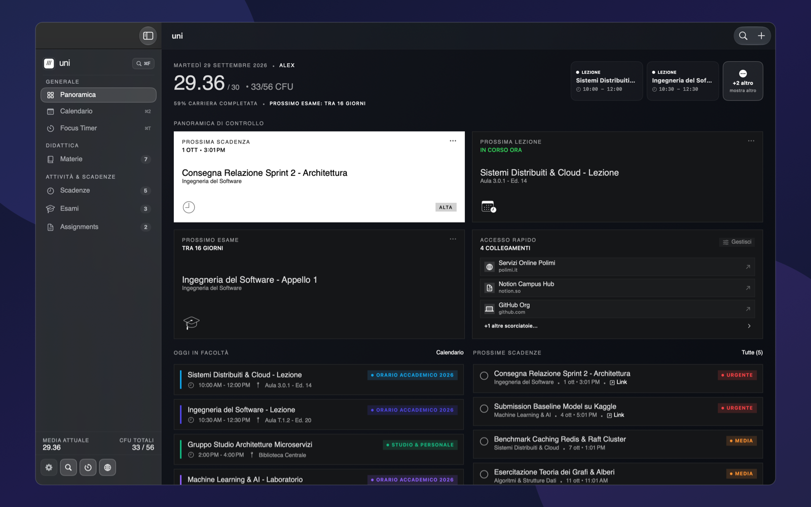
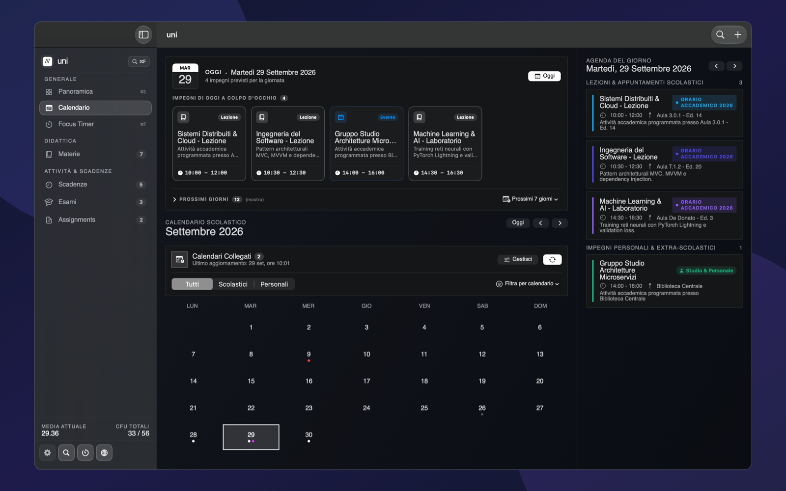
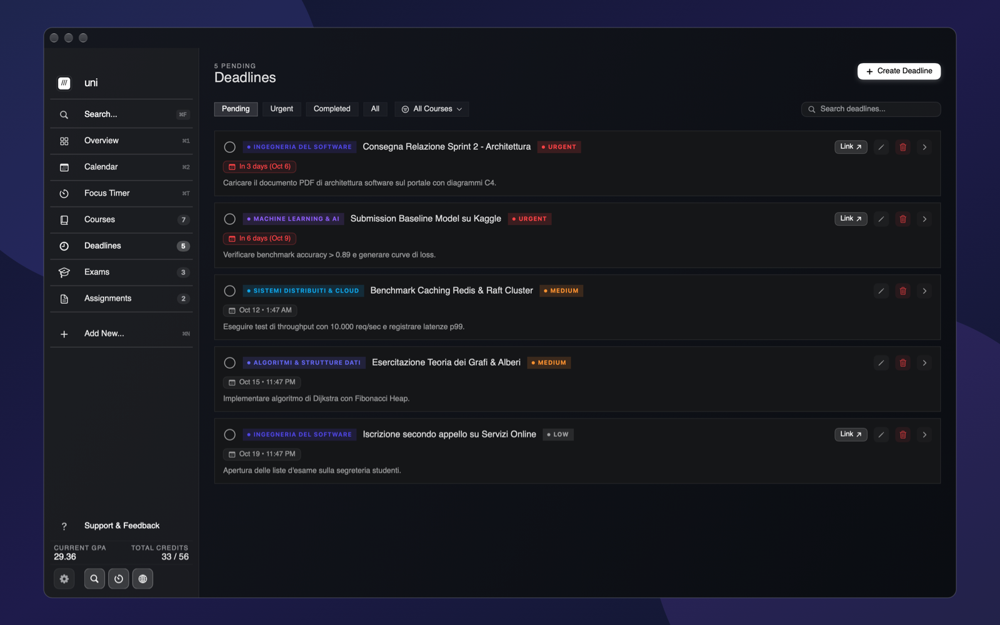
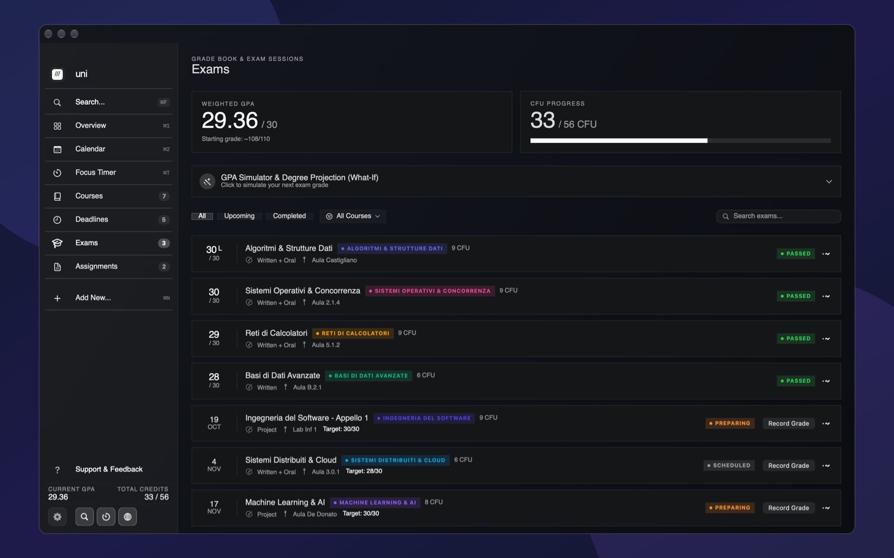
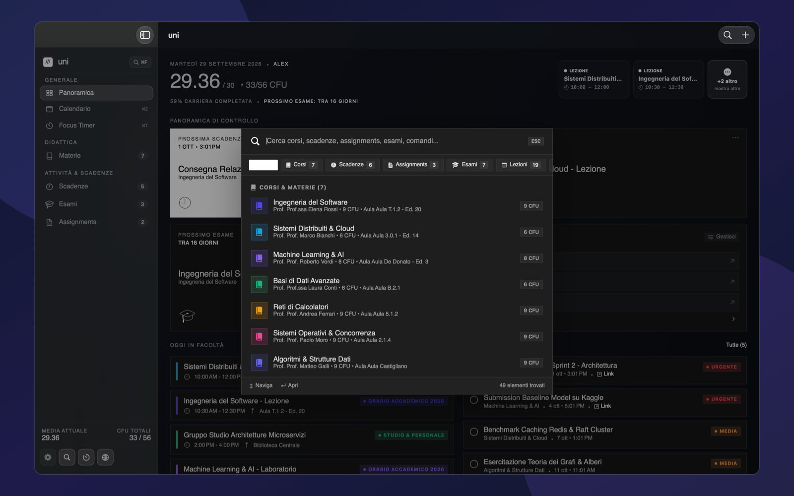
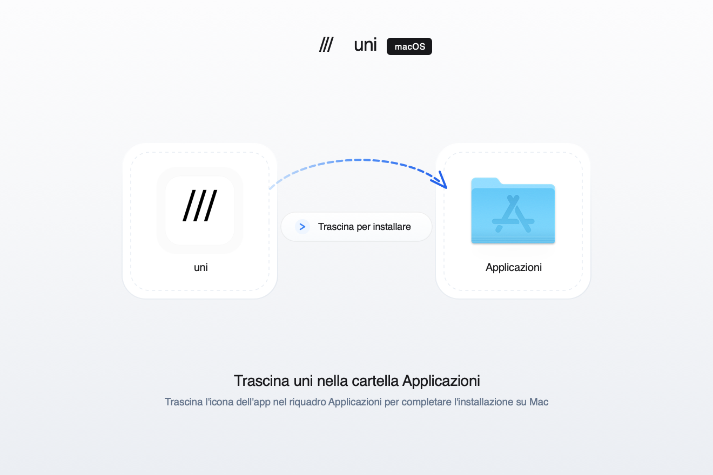

L'app accademica per Mac.
Progettata come si deve.
Tutti i tuoi corsi, orari 24h sincronizzati dal calendario dell'ateneo, scadenze, esami e la posta di Outlook. 100% nativa per macOS, privata e senza distrazioni.

Tutto ciò che serve per studiare.
Senza fronzoli.
Disegnata per dialogare in modo naturale con il Finder, con i calendari universitari e con le email dei docenti.
Panoramica Istantanea & Sezione NEXT
A colpo d'occhio trovi la prossima lezione in aula, la scadenza più urgente e il prossimo appello d'esame. Organizzazione accademica essenziale e senza attriti.
Orario Settimanale 24h
Sincronizzazione iCal/webcal con l'ateneo o configurazione manuale. Aule, docenti e orari sempre sotto controllo.

Scadenze con Priorità
Countdown automatico al minuto, badge di urgenza, allegati locali zero-copy e filtri per materia.

Media Ponderata & Voto Laurea
Calcolo automatico della media ponderata, CFU registrati e simulazione della base di partenza per la laurea.

Palette di Ricerca Globale ⌘K / ⌘F
Richiama in qualunque momento la ricerca stile Spotlight di macOS: trova istantaneamente corsi, dispense PDF, appelli d'esame e lezioni con filtri a pillola.

Scarica uni per il tuo Mac.
Compatibile con macOS (Apple Silicon & Intel). Scarica l'immagine disco .dmg oppure compila l'app direttamente dal codice sorgente su GitHub.

Esperienza d'installazione refined: apri il .dmg e trascina semplicemente l'app nella cartella Applicazioni.
Domande Frequenti
Tutto quello che c'è da sapere su compatibilità, sincronizzazione calendari, privacy e licenza di uni.
Cos'è uni e quali vantaggi offre rispetto ad altre app?
uni è un workspace accademico sviluppato nativamente per macOS in Swift e AppKit. A differenza di app web o basate su Electron, è ultra-reattiva, consuma pochissima memoria RAM (<40 MB), funziona al 100% offline ed è perfettamente integrata con il Finder e l'ecosistema Mac.
Quali versioni di macOS e processori Mac sono supportati?
uni è compilata come binario Universale nativo per macOS 13.0 (Ventura), macOS 14.0 (Sonoma) e macOS 15.0 (Sequoia) o successivi, pienamente compatibile sia con processori Apple Silicon (M1, M2, M3, M4) che con processori Intel.
Come funziona la sincronizzazione con i calendari universitari (Esse3, Cineca)?
uni supporta lo standard iCalendar (iCal/webcal RFC 5545). È sufficiente incollare il link del feed o importare il file .ics fornito dal proprio ateneo: l'app ripulisce i titoli da codici inutili, individua docenti, aule ed imposta l'orario settimanale rigoroso a 24 ore.
I miei dati accademici e le mie email sono al sicuro e privati?
Sì, al 100%. uni segue una rigida politica di privacy locale: nessun dato viene mai inviato a server esterni, non è presente alcuna telemetria o tracciamento e le comunicazioni con Outlook avvengono solo tramite AppleScript locale sul tuo Mac.
L'app è gratuita e open source?
Sì, uni è completamente gratuita e rilasciata con codice sorgente aperto sotto licenza libera MIT su GitHub, senza abbonamenti né acquisti in-app.
Cosa significa gestione file Zero-Copy con il Finder?
Quando colleghi dispense, slide o PDF a una materia in uni, i file rimangono esattamente nelle loro cartelle originali nel Finder tramite security-scoped bookmarks, senza occupare spazio su disco duplicato.